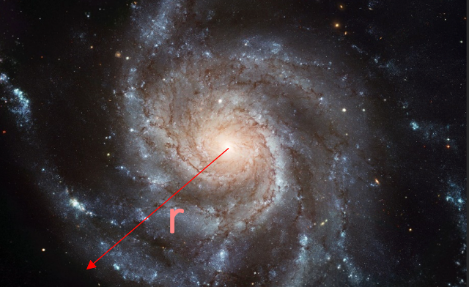
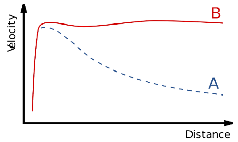
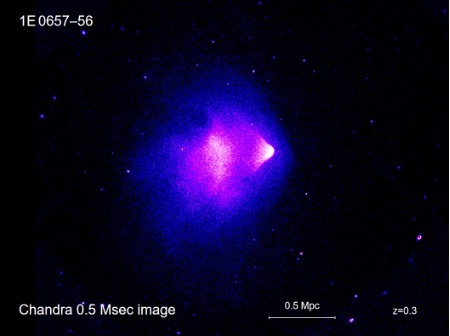

Weekly Ponderings
Click on each tab to read the assignment. At the bottom of each assignment, I have placed a link to submit your work. The assignment is due before the start of the associated class; to see when we'll be discussion which WP, please see the class schedule and calendar.
Weekly Pondering 1: Asking Questions
In classrooms, instructors try to communicate information and answer questions in a concise format.
This is important for providing basic education to students. In science, however, it is often more important
to ask the right questions.
It could be argued that scientific revolutions tend to be led by people who ask
novel and radical questions. Max Planck, for example, asked what one would find if one assumed that light is
emitted in packets, a bit like dollars and cents; he derived a model of light emission based on that hypothesis.
This concept fundamentally deviated from the understanding of light that was ubiquitous at the time. Even Max
Planck had not grasped the meaning of this idea; it was Albert Einstein who, several years later, gave a physical
interpretation. This served as the basis for what we refer to today as the quantum revolution. No one would have
paid attention to Max Planck's idea, except for the fact that the common (during the 19th century) conception of
light emission had utterly failed to explain the data for decades. If one studies the Sun, for example, one will
find that very little radiation is emitted with small wavelengths, the amount of radiation emitted reaches a peak
around visible and ultraviolet light, and then the amount emitted falls off close to zero for very large wavelengths.
Max Planck's model easily explained this observation--unlike the physics of the 19th century, which had failed
quite dramatically to explain it.
This aspect of science often gets lost in the classroom, in my view. Science is frequently presented as a series of facts
that students have to memorize, and, even though there are often application problems given in classrooms, this might give
the impression that scientific truths come from books. In reality, we make testable hypotheses, often arising from unique
questions that few people would ask, which we then compare to experiment and observation.
During the interview below, Lisa Randall talks about several deep questions that physicists and astronomers are
asking today; these include, for example, why gravity is so weak, and what dark matter and dark energy are. Watch the
interview carefully. In a paragraph or so, list and explain several questions you have about the universe that you would
like answered during this course. Please be prepared to discuss your questions during the WP1 session (please see the course
calendar). The link to submit your work is below.

Weekly Pondering 2: Round and Round and...
In Isaac Asimov's essay "Round and Round and...", from Of Time and Space and Other Things: Seventeen essays
on science, Asimov discusses how he approaches the problem of explaining how Earth-bound observers can only
see one side of the Moon, despite the fact that the Moon rotates on its own axis. This is the text.
Asimov then mentions that different observers would come to different conclusions regarding whether the Moon,
or indeed the Earth, is rotating. He states:
Is this true? We often hear the refrain that "everything is relative", in reference to Albert Einstein's theory of relativity. During this week's Weekly Pondering assignment, we will discuss the meaning of this statement."One thing we can admit to begin with: To an observer on the Earth, the Earth is not rotating."
Please read "Round and Round and..." by Isaac Asimov, from Of Time and Space and Other Things: Seventeen essays on science. In a paragraph or so, explain whether you think Asimov's quotation above is strictly true. If not, can you think of any evidence that Earth-bound observers could use to buttress the claim that they are definitely rotating?
Please be prepared to discuss the question during the WP 2 session.
Weekly Pondering 3: Planetary Habitability
Recently, we have learned a bit about the Solar System and the Earth. In studying these topics, it becomes evident
that Earth is uniquely habitable within our own Solar System. One of the most famous planetary scientists of the modern
era is Carl Sagan, who also wrote and spoke about science to the general public. This week, we will discuss a chapter
entitled “Remaking the Planets” from one of Carl Sagan’s most influential books, Pale Blue Dot.
In this chapter, Carl Sagan considers the current and future habitability of the Solar System. We know of no other
object—planet, dwarf planet, asteroid, or comet—that is currently habitable for humans. In the future, however, a
desire to explore the Solar System in an increasingly thorough fashion may compel humans to establish permanent colonies
on other terrestrial bodies.
We are lucky to live in an era when there are multiple active rovers on Mars. In February 2021, the rover Perseverance,
part of NASA’s Mars 2020 mission, landed on Mars. Perseverance is a car-sized, 1000 kg rover that is exploring the past
habitability of Mars and looking for biosignatures from life forms that may have existed on Mars in the past. It is also
attempting to determine the potential for human exploration of Mars. You can learn more about the mission here:
https://mars.nasa.gov/mars2020/
Read the cited chapter by Carl Sagan, linked to above. In a paragraph or two, discuss some of the most difficult problems
that you think will have to be solved to send people temporarily and permanently to Mars. Let’s assume that terraforming
is not feasible. We will discuss this during the WP3 session.
Weekly Pondering 4: The Search for Extraterrestrial Intelligence
Are we alone in the universe? This is a question that our species has been asking probably for as long as we have been
self-aware. As we gaze into the cosmos in the early twenty-first century, we may be entering a period in our history where,
for the first time, we may be able to answer this question meaningfully.
Often in science, we tackle difficult questions by first asking simpler ones. For instance, in thinking about whether there
is life outside of Earth, we may wonder about our own star--the Sun. We may decide that there are many reasons to study our
Sun, and not least of these is that, since our Sun is a fairly typical star and by far the closest star to us, it provides
us with an incomparable opportunity to study a star up close. Therefore, it provides us with the ability to peer into the characteristics
of distant stars that we would otherwise only be able to examine through telescopes. We are able to send craft proximate to
the Sun, so that we may not only observe its surface but measure the waves which propagate through it. This is the field of
helioseismology, which is analogous to seismology, the study of the propagation of waves through Earth. We are thus able to
construct a picture of the interior of the Sun, and use this information to study much more distant stars.
As we further consider the question of whether there is life in the cosmos outside of Earth, we may seek to also answer many
different questions—such as, for instance: what kinds of stars are there; how do they differ from each other; how common are
Sun-like planets; and, how many planetary systems are there which are similar to our Solar System? Answering these may give us
insight into whether there are features of our planet, Sun, and perhaps Solar System in general, that are unique. For example,
throughout the twentieth century we developed a much better understanding of how to categorize stars in distant parts of the universe.
This is primarily accomplished via their spectra, and we discuss this in Lecture 6: Measuring the Stars.
We may wonder if we can directly search for life outside of our planet. During Spring 2021, the NASA rover Perseverance landed on
Mars. This rover will search for past biosignatures on the Martian surface, in the hope that, if life developed on Mars, we might
be able to detect evidence of this life and begin to understand it. This would provide us not only with a dramatic discovery, but
the opportunity to study extraterrestrial life and therefore perhaps to better understand life in the cosmos.
Please watch the interview with Professor Sara Seager linked above, from 15:27 to 40:43. She is asked about the Drake Equation,
which is a framework for thinking about the search for habitable worlds. Also, please read Reflections on the Equation,
by Frank Drake (2013). Then, open the Drake Equation Calculator. Play around with some of the numbers. Bear in mind that this equation
cannot be used to compute the precise number of advanced life forms in the galaxy; this number is unknown. The Drake Equation
gives us a quantitative way of thinking about this problem, to aid us in our search for habitable planets. In a paragraph or two,
discuss your thoughts on the possible prevalence of extraterrestrial life in the galaxy (or universe, if you wish to be so bold!),
given the linked interview, essay, and PBS site.

Weekly Pondering 5: Measuring the Stars
Recently, we have been learning a bit about stars. Soon we will be learning how to categorize stars; this is
related to the topic of stars’ lives, and how they are born, evolve into main sequence stars, and eventually die.
How do we learn about stars?
We have seen that, since the Sun is by far the closest star to Earth and is a mostly typical star, we can learn about
distant stars by studying our Sun. To observe distant stars directly, however, we must look at stars’ light emissions.
The light that stars emit is referred to as the stars’ spectra. We learned about spectra from a previous lecture, when we
discussed atoms and light.
In the video, Kimberly Arcand discusses how she and her team measure and study dead stars. Notice that they observe stars
in various parts of the electromagnetic spectrum, which gives astronomers a much clearer and fuller picture than keeping
just to the visible part of the spectrum. She gives the example of her favorite astronomical object, Cassiopeia A. Do a
search for images of this object, and find an image that contains information from the infrared, visible, and X-ray part
of the spectrum. Use only proper sources, such as the Jet Propulsion Laboratory, the European Space Agency, etc., and be
prepared to mention your source during the WP office hour. Do a bit more research on Cassiopeia A, to determine (a) what kind
of object it is, and (b) what the central star is. Also, try to think of at least one question you have about this object
that seems mysterious to you. In a paragraph or two, write your answers to these questions, describe your question(s), and
include the link (and its source) to the image of Cassiopeia A.

Weekly Pondering 6: Gamma Ray Bursts
Since we have been learning about the stars, we have come across a panoply of types. Some stars are tiny and cool--such
as the most common type, the red dwarf. An example of such a star is Bernard’s star. Then there are the enormous blue giants.
These are the brightest stars in the universe, but also very rare. An example of such a star is HD 269810, which is about
2.19 million times as luminous as the Sun, and 130 times as massive [1]. On Earth, we get enough sunlight per square meter
on average to power [2] about 23 60-Watt light bulbs. If we replaced our Sun with HD 269810, a 100 x 100 m area of the Earth
would receive enough light per second to power about 800 average [3] US households for a year. Actually, Earth would be so
irradiated that it would become a desolate and hot rock.
We are also learning about how stars die. The most massive stars die in the most spectacular fashions, with huge fusion
explosions called supernovae. We have observed many supernovae in our universe, although per galaxy they are quite rare.
In this WP assignment we will learn about massive bursts of gamma radiation, with lower-energy afterglows, that were discovered
by accident in the 1960s. We call these gamma ray bursts, and they continue to perplex us. The are so powerful that they typically
release more energy [4] in 40 seconds than the Sun will in 10 billion years, and, although the evidence currently suggests that
most of them are associated with supernovae, no consistent model of how these bursts form has been established. Please read
this article (there are nine pages) on gamma ray bursts and watch the two short videos embedded above. In a paragraph or two,
state three aspects of gamma ray bursts that you find interesting and remarkable. They could be observations, and/or questions you have.
1. Evans, C. J., et al. "A massive runaway star from 30 Doradus." The Astrophysical Journal Letters 715.2 (2010): L74.
2. Kopp, Greg, and Judith L. Lean. "A new, lower value of total solar irradiance: Evidence and climate significance." Geophysical Research Letters 38.1 (2011).
3. Use of Energy Explained; site: https://www.eia.gov/energyexplained/use-of-energy/electricityuse-in-homes.php. Accessed: March 2021; Note: this site provides household energy use; the computation for HD 269810 is my own work.
4. Massive star's dying blast caught by rapid-response telescopes; site: https://phys.org/news/2017-07-massive-star-dying-blast-caught.html. Accessed: March 2021
Weekly Pondering 7: Personally Exploring the Universe?
Recently, we have been directing our focus once again to the planets, and we are dedicating an entire lecture to Mars. Coincidentally,
we happen to be learning astronomy during the beginning of the latest mission to Mars: Mars Science Laboratory, which has landed the
rover Perseverance in Spring 2021. This extends our discussion of other craft that humans deployed throughout the Solar System to
learn about the planets and the Sun. During the Weekly Pondering sessions this week, we will discuss the logistics of getting to Mars.
We will also, however, discuss space travel in general. Is it feasible, for instance, to send humans to other solar systems?
I’ve previously mentioned that, with our current technology, it would take many thousands of years to reach even the closest stars.
For instance, the closest star system to Earth is Alpha Centauri, which is 4.37 light years away. How far is this? One light year is the
distance that light travels in space, in a straight line, during one (Earth) year. Since the year consists of
365.25 days × 24 hours/day x 60 minutes/hour × 60 seconds/minute = 31,600,000 seconds, light travels 31,600,000 seconds × 300,000,000 meters/second
= 9.5 × 10 15 meters during one year. The number 1015 is 106 × 109, which is a million times a billion. Thus, one light year is about 9.5 million
billion meters. Suppose that we wish to travel one light year at 40,000 miles per hour, noting that this is slightly faster than the fastest
human craft. This corresponds to about 18,000 meters per second. How long will it take to travel one light year? The number of seconds it
would take would be 9.5 million billion divided by 18,000, which is about 528 billion seconds, or almost 17,000 years. It would thus take us
at least about 70,000 years to get to the closest star system.
It would seem that the challenges we must overcome are overwhelming. However, there are some ideas that might work—at least, insofar as sending
tiny craft to the stars. A solar sail is a sail that is designed to absorb the momentum of light. By using lasers, we might be able to send
craft to nearby stars within a human lifetime. Such craft will have to be very low-mass and will not be able to carry humans, but they might
still be able to send data back to Earth. Watch the two linked videos. The second is an interview with Dr. Jim Gates, who is a theoretical
physicist best-known for his work on String Theory; please watch this from the beginning to 13:55. The first is about a potential future solar
sail mission. Do a little research on the Viking 1 and 2 spacecrafts to determine when they were launched and when they landed on Mars. Now, do
the same for the Perseverance rover. Is there a marked difference between these two travel times? It’s important to note that these missions are
separated by about 45 years. In a paragraph or two, write your answers to these questions. Also, briefly research and comment on the IKAROS mission.


Weekly Pondering 8: Small Bodies in the Solar System
We turn our attention this week to objects in the Solar System other than planets. These include small Solar System Bodies, which are smaller, rocky bodies in the Solar System that aren’t planets, dwarf planets, moons, gas, and dust. You may have heard that Pluto, once considered a planet, was demoted (so to speak) to a dwarf planet. This week, we will discuss Pluto and the reason for its dwarf planet status. We will also talk about comets and asteroids. You may have also read about asteroid impacts on Earth, such as the Tunguska event in 1908. An asteroid is a relatively small, rocky object that orbits the Sun and is not a planet or a moon. They are also generally considered distinct from comets, which are small rocky and icy bodies that sometimes pass close to the Sun. The Solar System is filled with innumerable bits of rock and ice, and some of these hit Earth. Massive impacts are rare, but have in the past killed off vast numbers of living creatures.
Pluto

1. Note the there are three planets whose labels you can see in the animation. Describe where the other planets are.
2. Notice that there are four other named objects in the animation: Pluto, Makemake, Haumea, and Eris. Think about what aspects of their orbits are different than the orbits of the three planets that are clearly visible. Try to come up with three.
3. Based on your answers to the previous question, could you argue that Pluto (and its neighbors with similarly distinct orbits) is a planet? It’s important to note that, although there are only three Pluto-like objects in the animation, there are many thousands of smaller ones.
4. Watch the video “On Pluto” at the top of the page. In that video, Neil deGrasse Tyson explains why Pluto shouldn’t be considered a planet. Compare your answers to this video.
Asteroids and Comets
Conclusion
Weekly Pondering 9: The Formation of the Solar System
To begin, we recount the first part of a poem by Edgar Allen Poe:
An excerpt from “Al Aaraaf”
O! nothing earthly save the ray(Thrown back from flowers) of Beauty’s eye,
As in those gardens where the day
Springs from the gems of Circassy—
O! nothing earthly save the thrill
Of melody in woodland rill—
Or (music of the passion-hearted)
Joy’s voice so peacefully departed
That like the murmur in the shell,
Its echo dwelleth and will dwell—
Oh, nothing of the dross of ours—
Yet all the beauty—all the flowers
That list our Love, and deck our bowers—
Adorn yon world afar, afar—
The wandering star.
….
—Edgar Allen Poe, 1829
This is one of Edgar Allen Poe’s earliest and longest (I have truncated almost all of the poem for brevity), and was evidently inspired by a “star” that was discovered by the astronomer Tycho Brahe and suddenly disappeared. It is apparent to us today that this “star” was a supernova, but in the early nineteenth century people had no conception of supernovae. Poe is well-known for his contributions to gothic fiction, and is often credited with some of the earliest science fiction works. He also wrote about cosmology, which at the time was not a scientific field since virtually nothing was known about the universe.
How Did Our Solar System Form, and How Does Science Answer this Question?
Let us begin with a more terrestrial example. Suppose you are driving at night on a desolate road. You come to a T junction, and stop to look both ways. In the distance, you see two lights. Pausing for a moment, you pull into the intersection and drive away. How did you know you could do this? By seeing two lights, how did you determine that you could safely accelerate through the intersection? We can ask a more radical question: how did you know that the object emanating these lights was a vehicle?
As we interact with the world, we create models of how the world works. We get out of bed in the morning and prepare to fall downwards; we do not ever prepare to be pulled toward the ceiling or wall. When we go to bed at night, we never worry that a venomous alligator will suddenly emerge and consume us. We do these things because, since we are constantly building a model of how our world works, we make certain conclusions about the world. We have observed many cars throughout our lives, and therefore we can put into context these two headlights that we see on a desolate road. In other words, we don’t know with absolute certainty that these two lights are not emus with flashlights, but we use our model of the world—built from our experiences (as we scientists would say, data)—to make a reasonable conclusion that these lights are indeed from a vehicle. We then use our model to estimate how far away the vehicle is and how fast it’s going, and subsequently decide if we can safely pull into the intersection. We never have absolute certainty, but we can still have very high certainty. We justify our models by testing them; if they work, we keep them; if they fail, we modify them.
How do we know precisely how certain we should be? This is complex question that I don’t think can have just one answer, and, in part because this question is so difficult to answer, it is useful to have some rules that will guide us. The idea is to follow rules which will give us the best chance of understanding the world around us. Let start with these:
- We subject all ideas to criticism and experimentation.
- Experimentation is always limited, but this limitation varies considerably. Newton’s Second Law has been tested thoroughly, for example—every bridge, plane, car, and building is built using this principle. There are other concepts and equations in science that have been tested far less. We can be transparent about this by always stating experimental results honestly and accurately. We perform as many tests and observations as possible to avoid being overly sure that our ideas are correct.
- A hypothesis is a possible answer to a scientific question. It can be anything from a wild guess to an educated guess, or perhaps a bit better. A theory is an explanation for a set of phenomena that is well-supported with evidence.
- A good scientific hypothesis makes unique, testable predictions. If we give an explanation that could predict many possible outcomes, we cannot test this properly since it is very difficult to prove it wrong.
- A scientific claim is not correct because of a scientific consensus; rather, a scientific consensus will form around an idea that is supported by a vast array of evidence. This is similar to the adage that “all squares are rectangles, but not all rectangles are squares”.
- All of the planets orbit in the same direction around the Sun, and all in the same plane.
- All of the planets orbit in nearly circular orbits, with the exception of Mercury.
- The four closest planets are all rocky, and the four farthest are all gaseous. All of the rocky planets are relatively near the Sun, and all of the gaseous planets are relatively far from the Sun. This we describe as saying that the planets are differentiated.
- The oldest objects in the Solar System (as far as we know) are about 4.6 billions years old.
- The Sun captured planets from different parts of the galaxy, due to its gravity.
- The planets and the Sun formed together.
Remember that we want to make unique, testable predictions. The claim that the Sun and planets formed “together” is rather ambiguous; what does this mean, exactly? We want to be as precise as possible so that we can make specific predictions; then, we can compare those predictions to the data. In general, the easier it is to prove our hypothesis wrong, the more easily it can be tested and the better it is.
This leads us to a clearer version of this hypothesis, which we will call the Nebular hypothesis: this states that the Solar System formed from a piece of a nebula (a cloud of gas and dust) that contracted under its own gravity; as this piece contracted, it begun to spin faster and faster and eventually formed a disk. How do we determine is this hypothesis is correct?
First, we can subject it to the results of experiments on Earth. We know that all experiments done on Earth conserve angular momentum. This means that the moment of inertia times the angular velocity is constant, so long as there are no external forces speeding up or slowing down the rotation. The moment of inertia can be precisely defined based upon the mass of the object and how far that mass is from the center of rotation. As this quantity increases, the angular velocity (the rate at which the object is spinning) decreases; and as it decreases, the angular velocity increases. This is the conservation of angular momentum, and no experiment has been conducted that contradicts this principle.
As the early Solar System began to shrink, its moment of inertia would have decreased (this is determined based on a mathematical definition), and so experiments done on Earth lead us to state with a high degree of likelihood that the early Solar System would have begun to spin faster and faster. This, in turn, would have flattened the Solar System out to produce a disk. This is similar to how a ball of pizza dough forms a disk when spun, and, therefore, can be tested by experiments on Earth. Thus, we have explained why the planets orbit in the same plane, in the same direction, and why the planets’ orbits are nearly circular. We have a lot more work to do—since, for example, we have not yet explained why the planets are differentiated. We would try to answer this question similarly, however—for example, by taking the properties of atoms and molecules as determined by experiments on Earth and fitting our hypothesis to this data.
I hope the introduction sheds some light on how we would construct a scientific model for how the Solar System formed, and how we would test it. The argument that I have presented thus far, however, is incomplete. Try to think of at least one way that the nebular hypothesis can be tested without relying just on experiments on Earth, and describe this in a paragraph or two. Include any pictures that are relevant.
Weekly Pondering 10: The Formation of the Elements, and of Us
One of the most obviously integral topics in astronomy is that of the lives and deaths of stars. Perhaps just as important, but maybe less obvious,
is how cosmic events are connected to phenomena on Earth. It was Isaac Newton who first proposed a model of gravitation which connected the movement of the
“heavenly” bodies to the movement of objects on Earth. In Astronomy 1 we have learned about the spectra of stars, and we have learned that we can identify
spectral lines that we find in stars with spectral lines that we observe for atoms in experiments on Earth. This is the field of spectroscopy, and it gives us
confidence that stars are not only made of atoms, but particular and identifiable atoms. (Although we don’t discuss this much, spectroscopy is applied to
temperate and cold bodies in addition to stars, inside and outside of the Solar System.)
Thus far, however, we have not discussed where the elements come from. In this Weekly Pondering, we will do just that. Below, we link to the first 7 pages of
chapter IX from one of Carl Sagan’s most well-known works, Cosmos. Please read this chapter, and watch the video that is embedded above. In a sentence or two,
describe where the elements come from. Below, we reproduce a table which lists estimates for the abundances for common elements heavier than Hydrogen and Helium,
which are the two most common elements in the universe, in a portion of the Milky Way galaxy--and this closely approximates the abundances throughout the galaxy.
(These are abundances by number of elements, not by mass.) What are the two next most common elements in our galaxy, according to the table? Do a little research
on the four most common elements in the human body. Is there overlap? Briefly describe your answers to these questions, in a paragraph or so. Is there some
interesting significance here?
Please click on this link to see the proportion of the elements in the galaxy, and
click on this link to read chapter IX from Cosmos.
If you have trouble logging in, please see the note below regarding the login procedure to submit. (The credentials needed for all of these links are the same.)
Weekly Pondering 11: Black Holes
Recently, we have been learning about black holes. A black hole is a region of space from which nothing can escape, and, despite its science-fiction-sounding name,
there is a large array of evidence that black holes exist.
Black holes are predicted by Albert Einstein’s general theory of relativity, but Einstein didn’t realize upon publishing his model in 1915 that it predicts their existence.
In 1916, the physicist Karl Schwarzschild published [1] a solution to Einstein’s equations which showed that, if the density of an object is great enough, spacetime gets
stretched down to an infinitesimally small point. This solution, which it turns out is one of a larger class of solutions, was not generally accepted as physical until the
first black hole was tentatively discovered in the mid 1970s. The X-ray source CYG X-1, discovered in 1964, was considered [2] to most likely be a black hole by 1973. Since
then, a plethora of objects have been discovered which have clear characteristics of black holes.
Recent observations have suggested that most galaxies contain supermassive black holes in their centers [3]. A supermassive black hole, as its names suggests, is a really big black hole.
They often have masses millions or billions of times that of our Sun. For instance, there is a black hole in the center of the galaxy we inhabit, the Milky Way galaxy, dubbed Sagittarius A*.
By studying the orbits of stars in its vicinity [4], astronomers deduce that its mass is around 2.6 million times the mass of the Sun and its radius is around 7.5 million km. These numbers
are a bit baffling—and so let’s see if we can understand them more intuitively.
The radius of Sagittarius A* is about 5% of the radius of Earth’s orbit around the Sun. Thus, its 2.6 million solar masses are squeezed into a volume far smaller than the region inside of
Earth’s orbit. Its radius is also about 1160 times as large as Earth’s radius—that is, the distance from the center of the Earth to Earth’s surface. This means that about 1160 Earths
would have to be placed end-to-end to connect via a straight line one part of the black hole’s surface to the opposite side. This seems to be an impressive number—but, let’s remember
that Sagittarius A* has the mass of about 2.6 million Suns, which is about 870 billion Earths. Thus, Sagittarius A* has the equivalent of almost a trillion Earths, squeezed into a
volume circumscribed by a radius equal to only about 1000 Earths. This radius is also about 19 times the radius of the Moon’s orbit around Earth. Imagine, for instance, we move the
Moon 19 times farther away than it is now. Inside of the Moon’s orbit, we then jam almost 1 trillion Earths.
This analysis is a bit misleading, however, because the “surface” of a black hole is not a physical surface. We are referring here to the boundary between the part of space from which
you can escape, and the part from which you cannot escape. This region is not a physical surface, and is not labeled with a sign post. You wouldn’t know when you crossed this boundary,
but, once you crossed it, you will never leave. Where, then, is the matter of the black hole?
The short answer is that we don’t know. According to Einstein’s theory of gravity (also called the general theory of relativity), all of the mass would be forced into a single
point of infinite density at the center of the black hole. When we get infinities in physics and astronomy, however, we start to think we’re doing something wrong—and
it is partially for this reason that few physicists take this conclusion seriously. We also know that when we try to combine general relativity with the physics of tiny
particles (called quantum mechanics, which generally describes physics on small scales), we get nonsensical results. Thus, we likely need an updated theory of gravity,
and perhaps quantum mechanics, before we will be able to understand what is happening in the center of a black hole.
Watch the two linked videos. In a paragraph or two, try to come up with and explain at least two questions you have about black holes.
We will discuss these questions during the WP this week.


[1]. Schwarzschild, Karl. "Über das gravitationsfeld eines massenpunktes nach der einsteinschentheorie." Sitzungsberichte der Königlich Preußischen Akademie der Wissenschaften (Berlin (1916): 189-196.
[2]. Bregman, J., et al. "Colors, magnitudes, spectral types and distances for stars in the field of the X-ray source CYG X-1." Lick Observatory Bulletin 24 (1973): 1.
[3]. Rees, Martin J., and Marta Volonteri. "Massive black holes: formation and evolution." Proceedings of the International Astronomical Union 2.S238 (2006): 51-58.
[4]. Ghez, A. M., et al. "The first measurement of spectral lines in a short-period star bound to the galaxy’s central black hole: a paradox of youth." The Astrophysical Journal Letters 586.2 (2003): L127.
Weekly Pondering 12: Dark Matter
We are currently learning about cosmology, which is the study of the composition and evolution of the universe. Although we do have a basic picture of how the universe has evolved, we also know that there are deep cosmic mysteries that we do not understand. One of these is dark matter, which—if it exists—is by far the most common form of matter in the universe. What is dark matter, and what is the evidence for it?

Dark matter is thought to be a particle that, since it has mass, can therefore create substantial gravitational fields if it exists in large enough numbers. It must,
however, not interact with light or visible matter very much and it must not form nuclei or atoms. These properties explain a number of puzzling observations. Why
should we think that such a particle exists?
There are two main forms of evidence for dark matter. The oldest form comes from galactic rotation curves. These are plots of how quickly stars rotate around
the centers of spiral galaxies. For example, to the right we have a photo of a spiral galaxy. The red arrow represents the distance from the center of the
galaxy to some star, which is located at the tip of the arrow. This star is rotating around the center with some speed, which we can measure. We can repeat
this experiment with many stars in this galaxy, and if we plot these speeds and distances we get a galactic rotation curve.
Using the mass distribution that we see, we can apply Newton’s model of gravity and laws of motion to predict what these rotation curves should look like.
Our prediction is that the speeds of the stars near the edges of spiral galaxies should be much slower than the stars near the galactic bulges. Thus, we predict
curves that look like curve A in the leftmost figure.
What we find, however, is that the stars near the edges are traveling at roughly the same speeds as the ones near the bulges! This corresponds to curve B,
which we refer to as a flat rotation curve. This tells us that either we are unable to see most of the matter in galaxies, or that our laws of physics and
gravity aren’t correct. The dark matter hypothesis proposes that the answer is the former. We will discuss the latter, that our laws of physics and gravity
are wrong, later on this page.


The second form of evidence for dark matter comes from gravitational lensing. In the photo on the right, we depict the Bullet Cluster, which is a cluster of colliding galaxies. Notice that there are pink and blue regions. The cluster doesn’t actually have these colors; instead, this is a color scheme that marks the areas where we see matter (in pink) and the areas where the matter must be via measuring gravitational lensing (blue). By observing the bending of light in this image, we are able to work backwards to determine where the matter in this cluster must be—since, remember, gravitational lensing occurs because matter bends space. In order to explain the lensing in this image, most of the matter must be located in the blue areas. When we look for matter in this region using the electromagnetic spectrum (in other words, light), however, we see it in the pink areas.
Yet, how do we know that dark matter is a particle? Despite multiple experiments designed to detect this particle, no convincing evidence of detection has been observed. Since dark matter must interact only weakly, this is not too surprising—but, we cannot claim to understand this phenomenon without having clearly directly detected such a particle. We must keep an open mind and consider many other potential solutions. For example, several decades ago astronomers proposed that these gravitational effects might be coming from neutrinos. As we’ve learned, these are small particles that mostly pass straight through solid objects like the Earth; they also do not form atoms, since they do not interact by the strong nuclear force, and so they seem like a promising candidate. Further, they have been directly observed, and, although they do interact with light, they interact only weakly. Unfortunately, neutrinos are too light and not numerous enough to explain these observations. Astronomers have also proposed that this missing mass might be black holes, as described in the above-linked video.

Instead of hypothesizing missing matter, some astronomers propose that these effects are instead due to a breakdown of Newton’s laws. This is
referred to as modified Newtonian dynamics (MOND). MOND can explain galactic rotation curves quite well, but has trouble fitting all of the other data.
We know that Newton’s laws work well on cosmological and Solar System scales, and this places stringent limitations on MOND models; these models then end
up adding in some dark matter. Nonetheless, this is an active area of research.
Please watch the linked video about the possibility that dark matter consists of black holes. In a paragraph or two, briefly list two questions you have about
dark matter. We will discuss these during the WP session this week.